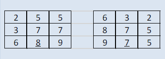

1. Generar una tabla según el número de filas y columnas que el usuario ingrese
2. Ingresar valores en la tabla utilizando "input" en cada celda
3. A partir de los datos ingresados generar otra tabla de las mismas dimensiones en la cual constará
la información de la misma pero como si la girara 45% de su posición inicial.
4. Utilizar GeoLocalización para calcular la distancia en kilómetros entre su
casa y la ubicación en la que se encuentra ubicado al registrarse.
Ejemplo:

Además, debe permitir el registro de usuarios, con datos como:
Nombre, RUC, Ubicación, Número de filas, Número de columnas, con sus respectivas validaciones.
Por último, calcular la distancia en kilometros entre su casa y el lugar de registro.